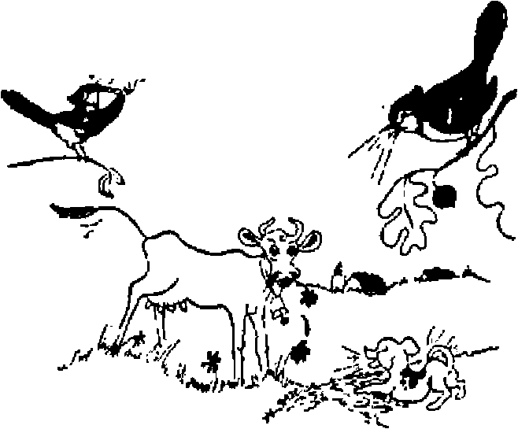
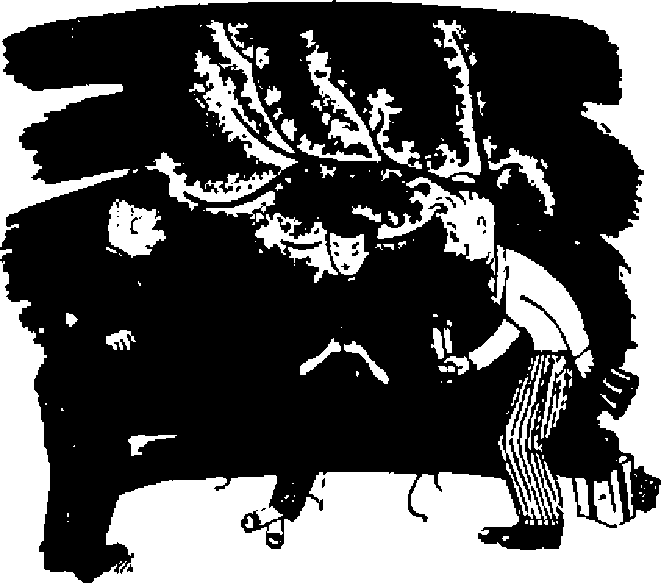
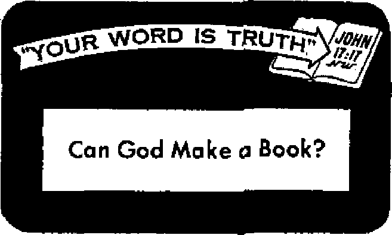

History, Science, Nature
"Watching the World"

A long-fought battle. What do you know about it?
The effect of the 'new look* upon your home
Some facts about the mind
The Bible is from God, not from man
OCTOBER 22, 1954 semimonthly
THE MISSION OF THIS JOURNAL
Niewi source* that are able to keep you awake to the vital lemies our times must be Unfettered by censorship and selfish Interests, kwakel” has no fetters. It recognizes factst faces facts, Is free to uhllsh facts. It is not bound by political ambitions or obligations; it is unhampered by advertisers whose toes must not be trodden on; It Is unprejudiced by traditional creeds. This Journal keeps itself free that it may speak freely to you. But it does not abuse its freedom. It maintains integrity to truth.
“Awake!” uses the regular news channels, but is not dependent on them. Its own correspondents are on all continents, in scores of nations. From the four comers of the earth their uncensored, on-the-scenes reports come to you through these columns. This Journal's viewpoint is not narrow, but is International, It is read in many nations, in many languages, by persons of all ages. Through its pages many fields of knowledge pass in review—government, commerce, religion, history, geography, science, social conditions, natural wonders—why, its coverage is as Broad as the earth and as high as the heavens.
“Awake!” pledges itself to righteous principles, to exposing hidden foes and subtle dangers, to championing freedom for all, to comforting mourners and strengthening those disheartened by the failures of a delinquent world, reflecting sure hope for the establishment of a righteous New World.
Get acquainted with “Awake!” Keep awake by reading “Awake!”
PUBLISHED SEMIMONTHLY BY WATCHTOWER BIBLE AND TRACT SOCIETY, INC;
117 Adams Street
N. H, Knobs, Prerfde/tf
Printing thi« iaiutr 1,250,000
h whl«h thH mMUia* I* piblhMd: Semimonthly—Afrikaans, English, Ffrifiiih, French, flfrmtn, Holland lab, Norwegian, Spanish, Swedish, Monthly—Danish, Greek, PortUEune, Ukrainian.
Office, Turly sutacrlption Rat*
Affiiriea, U-6., 117 Adams St,, Brooklyn 1, NT $1 Airtratla, 11 Beresford Rd., Sttathneld, N.B.W. Sa Calida. 40 Irvin An.t Toronto 5, Ontario SI Enifaia, 34 Craren Terrace. London, 2 7s $Mth Afrf**r Private Bu, P.O. Elands! on Win,
Transvaal Ti
Brooklyn 1, N. Y., IL 3. A.
Grant Suite®, Seerefwy
Five cents a copy
Realttanm should be vent to office In tout cowi' try in compliance with regulations to guarantee safe Mtwry of money. Remittances ire accepted al Brooklyn from countrlu where no office is located, by international money order only. Subscription rate* in different couptrio are here aUt.ed in local currency. Netlee of •xslratlen (with renewal blank j la sent at least two fanes before lubecription expires. Cham* H ad*re» when sent to onr office may be etpeeted effective within one month, flood your old as well a* new address.
Entered as seamd-elan matter at Brooklyn, N. T. Art of March 3, IS T9. Printed In U- S. A,
CONTENTS
|
Is Man's Pugnacity Inherent? |
3 |
The Concept of Psychoanalysis |
21 |
|
Christians Fight for Freedom |
5 |
Both Good and Bad |
22 |
|
The Jay—Planter of Oak Forests |
9 |
Chimpanzees Make Monkeys | |
|
They Say It with Beads |
12 |
out of Psychologists |
24 |
|
Japan’s Reaction to America and Russia |
13 |
“Your Word Is Truth” | |
|
The Moon Does More than Shine |
15 |
Can God Make'a Book? |
25 |
|
Picturesque Luxembourg |
16 |
Jehovah’s Witnesses Preach in All | |
|
A Modern Look at Furniture |
17 |
the Earth—Honduras |
27 |
|
Another Nation for the |
Do You Know? |
28 | |
|
British Commonwealth? . |
20 |
Watching the World |
29 |
"Now it is high time to awoke/' —'B»nan« 13:11
Volume XXXV
Brooklyn, N. Y., October 22, 1954
Number 20
T IERE is an old dogma in psychology that says that in animal nature there is an ineradicable instinct of pugnacity that makes fighting or wars inevitable. This theory has been the source of much thoughtless chatter, such as, 'It is natural for man to want to fight’; or, ’Wars are necessary’; or another phrase heard quite frequently is, ‘There always were wars and there always will be wars.’ So when Bible references are made regarding the peaceful conditions that will exist upon the earth among men and animals under God’s kingdom arrangement, these same people cry out against such promises as fantastic, mere fantasy, a wish, words for dreamers. Others will salve their consciences by saying, ‘Those conditions will never come in pur time.’
By claiming that man’s pugnacious attitude is inherent or natural, these thereby excuse their own misconduct, their quarrelsome dispositions, their fights and wars, and place the blame on God, who, they say, created them with this belligerent attitude. In support of their theory they point to the lower animal creations as proof, declaring that these, like man, possess similar instinctive, warlike tendencies.
Recently a Chinese scientist, Dr. Loh Seng Tsai, professor of psychology at Tulane University, in New Orleans, Louisiana, debunked this theory of instinctive pugnacity. Experimenting with rat-killing cats, Dr. Tsai told the fourteenth International Congress of Psychology that he had “demonstrated for the first time in the history of science with crucial experiments that cats and rats, the so-called natural enemies, can and do cooperate,” and that his discovery “throws overboard the traditional dogma in psychology that in animal nature there is an ineradicable instinct of pugnacity which makes fighting or wars inevitable.” “My experimental results give the death blow to any such fighting instinct theory.” He continued: “Since we have failed to find any such instinct, even among supposed natural enemies, many think that our research has laid the cornerstone as a basic biological foundation for the theoretical possibility of world peace.”
Dr. Tsai at first experimented with cats and rats that were placed together shortly after birth. These lived peacefully and cooperatively. More recently Dr. Tsai used in his experiments “a very ferocious cat" that had achieved “a long and glorious record of rat-killing.” To remove all doubt that the cat was a killer, she demonstrated her disposition and ability by disposing of five ratfe in short order. Her rat-killing behavior is not inferred, but actually demonstrated and confirmed repeatedly.
Dr. Tsai’s problem was to teach this ferocious, rat-killing cat to live peacefully with a rat. By training the animals that the two of them must co-operate in order to survive, Dr, Tsai managed to educate a vicious cat to live peacefully with a rat It took only twenty-eight days, distributed over three and one-half months, to do the trick. After that the cat and the rat ate face to face out of the same dish. This was accomplished without punishment. Dr. Tsai explained that his demonstrations show the “immense possibility and almost unlimited power of education.’’ “The world today,” he concluded, “is in need of a new philosophy of life.”—New York Times, Jun^ 1954.
Education, as Dr. Tsai pointed out, has immense possibilities and almost unlimited power. However, in order for education to bring peace and co-operation it must be of the right quality, stem from the proper source and be dedicated to the right end. Here is where the Scriptures excel. They are of the proper source, right quality and, if properly applied, will bring satisfactory results. Long before Dr. Tsai’s revelation about education the Bible made it plain that man’s present pugnacity is not inherent and that accurate knowledge will sprout peace. However, what God teaches through his Word and what man teaches through his schools of higher learning are two different things. One results in peace, the other in strife and war.
Note the Bible on this point: “Who is wise and understanding among you? Let him show out of his right conduct his works with a meekness that belongs to wisdom. But if you have bitter jealousy and contentiousness in your hearts, do not be bragging and lying against the truth. This is not the wisdom that comes down from above, but is the earthly, animal, demonic. For where jealousy and contentiousness are, there disorder and every vile thing are, But the wisdom from above is first of all chaste, then peaceable, reasonable, ready to obey, full of mercy and good fruits, not making partial distinctions, not hypocritical. Moreover, the fruit of righteousness has its seed sown under peaceful conditions for those who are making peace.”—James 3:13-18, New World Trans.
The contentiousness, strife, bitter jealousies and lying, revolutions and wars in thi^ world prove beyond doubt that its educational system is not of God. Instead, it is, as James declared, “earthly, animal, demonic.” But the wisdom from above, from God and of God, 'is first of all chaste, then peaceable, reasonable, full of mercy and good fruits, not hypocritical.’ Before attaining to, thjs wisdom humankind must first be taught of Jehovah, as the prophet Isaiah stated: “And all thy children shall be taught of Jehovah; and great shall be the peace of thy children.” And again through the prophet Micah this need is emphasized: “And many nations shall go and say, Come ye, and let us go up to the mountain of Jehovah,... and he will.teach us of his ways, and we will walk in his paths.... and they shall beat their swords into plowshares, and their spears into pruning-hooks; nation shall not lift up sword against nation, neither shall they learn war any more.” Truth about Jehovah does away with war, strife and contentiousness. It is peaceable, reasonable, full of mercy and good fruits.—Isaiah 54:13; Micah 4:2-5, Am. Stan. Ver.
Jehovah’s witnesses have applied this way of life in the New World society and it has worked. Even though they are from many lands it has united them as one people, With them wars have ceased. All political, religious and racial divisions have been done away with. Instead of this world’s searching for a new way of life it need only apply the old one laid down by Jesus—the love of God and the love of one’s neighbor as one’s self. This principle will uproot all the pugnacity there is in mankind.
Not all freedom* have been wort by wan with carnal weapon! on firing line*. A real fight for freedom hat been going on incmantly for age& It it to your eternal weKaro to know how figk* hot been waged and by whom. To this end the following article should be of great help.
FREEDOM has inspired men of all nationalities, of all nations, in all ages. “Let freedom ring!” shouted those who formed the new republic in North America. Freedom was sweeter than life itself! "Is life so dear, or peace so sweet, as to be purchased at the price of chains and slavery? Forbid, Almighty God'. I know not what course others may take; but as for me, give me liberty, or give me death.” These sentiments of Patrick Henry were similar to those of Cicero, who centuries before cried out: "Liberty the sweetest of all blessings.”
But vain have been the efforts of men to secure real freedom for themselves and their children. Much wealth and blood have been sacrificed on worldly altars of freedom. Their many causes and wars fought in the name of freedom have ended either in retaining the same old shackles or in coming under still greater bonds of restraint, As recently as*1940 Christendom’s politicians admitted that men were not free, that World War n was being fought to establish Four Freedoms everywhere, enumerating these as freedom of worship, freedom of speech, freedom from fear and freedom from want After the end of World War n these freedoms were not made sure. Tn 1950 there was the Freedom Crusade in Western countries to secure these fast-fading freedoms. The fight for freedom continues as war wages against communism.
Of all freedoms the most vital are those of the worship of God and of speech. Let these two freedoms exist even without the freedom from want and from fear of aggression, and the people will still have something to live and fight for. Yet, in the face of the declared aims of the democratic .world, it is in these very fields of worship and of free speech concerning the truth that the people’s freedom is being undermined by hypocritical champions of freedom.
Christians have the truth of God’s Word committed to them. The very power of this truth is for freedom. Said Jesus: "If you remain in my word, you are really my disciples, and you will know the truth, and the truth will set you free. Therefore if the Son sets you free, you will be actually free.” It is the truth concerning the kingdom of Jehovah God by his Son Christ Jesus that makes men free. If any people would be free and enjoy liberty they must leam the truth about God’s established kingdom and hold fast to it. This truth the people of the earth are entitled to, and no man or group of men has the right or the authority to censor, withhold or to dedare it illegal. The truth Is the means whereby people may approach God and worship him. For ihis reason Jehovah has sent forth his truth to free the people from the bonds of ignorance, superstition and fear, and that they might walk in the path of light and life.—John 8:31, 32, 36, New World Trans.
The greater freedom from sin and death comes also by knowing the truth about God and his provision through Christ to redeem all mankind. Exercising faith in this provision opens a way to the greatest amount of freedom possible for humans to attain. “For such freedom Christ set us free. Therefore stand fast, and do not let yourselves be confined again in a yoke of slavery.” Christian freedom is a license, not for moral badness, but for honoring God. As Peter admonished: “Be as free people, and yet holding your freedom, not as a blind for moral badness, but as slaves of God.”—Galatians 5:1; 1 Peter 2:16, New World Trans.
Early Fighters for Freedom
To maintain the right to worship God freely according to the dictates of one’s conscience and to speak the truth has been a struggle through all ages. As far back as Abel’s day true worship was opposed. Abel paid with his life for maintaining- that right. Enoch and Noah both fought for freedoms. And because of their valiant fight the purposes of Jehovah were declared to a world that then existed.
To Moses God gave commandments revealing the boundaries of human freedom in regard to man’s relationship to his Creator. Also this law made manifest Jehovah’s purpose to grant freedom to all mankind in due time. To Moses God said: “Speak to the sons of Israel, arid you must say to them, ‘... sanctify the fiftieth year and proclaim liberty in the land to all its inhabitants. It will become a Jubilee for you, and you must return each one to his possession and you should return each man to his family? ” The Jubilee with its proclamation of freedom throughout all the land was an event that foreshadowed a free world under God’s kingdom by Christ Jesus. That government will fill the earth with boundless prosperity and freedom. It will decree and maintain endless freedom from all economic want for all the obedient inhabitants of the earth. For this Rule Jesus Christ taught his followers to pray to God, saying: “Let your kingdom come. Let your will come to pass, as in heaven, also upon earth.”—Leviticus 25:1, 2, 10; Matthew 6:10, New World Trans.
Had Israel championed Jehovah’s law by keeping it faithfully, the nation would have enjoyed freedom from want in a “land flowing with milk and honey,” with no fear of aggression or of ever losing its liberties. But Israel failed to keep God’s law. They failed to keep the jubilees, to proclaim freedom to the poor and the oppressed. They lost their freedom when they forsook Jehovah the God of truth and freedom. God permitted unfaithful Israel to be destroyed by the Babylonian armies.
However, during the history of this faithless nation there were those who championed freedom. Paul names a few of these, saying: “And what more shall I say? For the time will fail me if I go on to relate about Gideon, Barak, Samson, Jephthah, David as well as Samuel and the other prophets, who through faith defeated kingdoms in conflict, effected righteousness, obtained promises, stopped the mouths of lions, stayed the force of fire, escaped the edge of the sword, from a weak state were made powerful, became valiant in war, routed the armies of foreigners. ... Yes, others received their trial by Blockings and scourgings, indeed, more than that, by bonds and prisons. They were stoned, they were tried, they were sawn asunder, they died by slaughter with the sword, they went about in sheep skins, in goat skins, while they were In want, In tribulation, under ill-treatment; and the world was not worthy of them.” Faithful men of old paid a great price to exercise their freedom to worship God.—Hebrews 11:32-38, New World Trans.
Fight During First Century After Christ
This struggle for freedom that the prophets endured continued on down into the Christian era. Jesus told his followers that it would be so. Said he; “Look! I am sending you forth as sheep amidst wolves; therefore prove yourselves cautious as serpents and yet innocent as doves. 'Be on your guard against men; for they will deliver you up to local courts and they will scourge you in their synagogues. Why, you will be haled before governors and kings for my sake for the purpose of a witness to them and the nations.” Jesus himself felt the wicked lash of this opposition. Insisting on remaining free to preach and teach the truth about God’s kingdom, Jesus was cruelly betrayed, arrested, persecuted, beaten and finally murdered, But in his death he became freedom’s Champion, the Liberator of humankind. And it is because of him that freedom will ring for all time to all the inhabitants of the earth!—Matthew 10:16-18, New World Trans.
Peter and John, who closely followed in Jesus’ footsteps, were also victims of like treatment. On several occasions they were denied freedom of worship, because the doctrine of Jesus was offensive to some people. But these championed freedom’s cause with these words: “Whether it is righteous in the sight of God to listen to you rather than to God, make your decision. But as for us, we cannot stop speaking about the things we have seen and heard.” Mischievous laws restricting freedom were not honored by Christians. They maintained these rights inalienable. Therefore the Record reads: “And every day In the temple and from house to house they continued without letup teaching and declaring the good news about the Christ, Jesus?’ The reason for their persistency: “We must obey God as ruler rather than men.” Freedoms to worship, to speak, to assemble for worship, to publish truth, are inalienable rights; they are from God and no man or government has the authority to take them away.—Acts 4:19, 20; 5:42, New World Trans.
The early fathers of the United States of America understood and appreciated this fact and endeavored to cement these rights in the Constitution of these United States beyond the reach of men. What these rights were Thomas Jefferson made plain: “Equal and exact justice to all men, . . . freedom of religion; freedom of the press; freedom of persons under the protection of habeas corpus; and trial by juries impartially selected.” An even broader definition is given by John Stuart Mill, who wrote: “The appropriate region of human liberty ... comprises, first, the inward domain of consciousness; demanding liberty of conscience . . . liberty of thought and feeling; absolute freedom of opinion and sentiment on all subjects, practical or speculative, scientific, moral, or theological. The liberty of expressing and publishing opinions . . . being almost of as much importance as the liberty of thought... No society in which these liberties are not, on the whole, respected, is free, whatever may be jts form of government.”
Fight for Freedom Today
Christian witnesses of Jehovah God today as well as God-fearing men down through the ages have fought to establish these freedoms. But these rights are far from secure. The danger to freedom to preach and teach the truth about God’s kingdom today is real and disturbing. It is high time that lovers of freedom rally to the defense of these precious rights. Jehovah’s witnesses for years now have been championing these rights in the courts of nations throughout the world. Regarding this battle for religious freedom, the late Supreme Court Justice of the United States, Murphy, wrote:
“No chapter in human history has been so largely written in terms of persecution and intolerance as the one dealing with religious freedom. From ancient times to the present day, the ingenuity of man has known no limits in its ability to forge weapons of oppression for use against those who dare to express or practice unorthodox religious beliefs. And the Jehovah’s Witnesses are living proof of the fact that even in this nation, conceived as it was in the ideals of freedom, the right to practice religion in unconventional ways is still far from secure.... They have suffered brutal beatings; their property has been destroyed; they have been harassed at every turn by the resurrection and enforcement of little used ordinances and statutes. See Mulder and Comisky, 'Jehovah's Witnesses Mold Constitutional Law,’ 2 Bill of Rights Review, No. 4, p. 262. To them, along with other present-day religious minorities, befalls the burden of testing our devotion to the ideals and constitutional guarantees of religious freedom. We should therefore hesitate before approving the application of a statute that might be used as another instrument of oppression. Religious freedom is too sacred a right to be restricted or prohibited in any degree without convincing proof that a legitimate interest of the state is in grave danger.”
Jehovah’s witnesses continue to battle for these freedoms not only in America but throughout the world. And the freedoms that they have won are for all people. No other group has ever put up such a legal fight in behalf of freedom. Since 1937, in the interest of freedom, they have pressed forty-seven cases to the Supreme Court of the United States, of these winning thirty-five. This has cost them no small expense in money and inconvenience. But Jehovah’s witnesses, like their Master Jesus Christ, are fighters for freedom. They are interested in hearing freedom ring. That is why the fight for freedom to worship and serve God will go on with greater intensity and courage.
Regardless of what nation may determine to outlaw these freedoms, God’s work of declaring this good news of his established’ kingdom will be accomplished. It cannot be stopped. His work will continue irresistibly to final victory and to his vindication and praise. However, God warns those who presumptuously fight against him by trying to restrict his people from worshiping him as he instructs. “Now consider this, ye that forget God, lest I tear you in pieces, and there bfe none to deliver.” (Psalm 50:22) Sure destruction will come tn “the battle of that great day of God Almighty,” to all opposers of God and his freedom-loving witnesses. Wise counsel therefore comes from a teacher of law, Gamaliel, set down at Acts 5:38, 39 (New World Trans.): “And so, regarding the present matters, I say to you, Do not meddle with these men, but let them alone; (because, if this scheme and this work is from men, it will be overthrown; but if it is from God, you will not be able to overthrow them;) otherwise, you may perhaps be found fighters actually against God.”
Heed the advice of God’s Word. Do not deny any man his God-given freedom. Defend his right by using your freedom to hear, accept and follow the great Champion of freedom, Christ Jesus. So doing, you may enjoy the glorious freedom of the childrep of God in the righteous new world of God’s promise.
BIRDS are like people: they become more interesting the better you know them. How true this is with that colorful personality in birdland, the jay! Here is a bird that some people know only as a rascal, a robber or a noisemaker. But those wjio are better acquainted with the jay know him to be a clown, a wit, a tease, an insect exterminator, a mimic, a ventriloquist, a practical joker and a thrilling adventure in wild beauty. Besides all this the jay is as shrewd as a rat, as alert as a winged weasel, as curious as a cat, as mischievous as a small boy and as deft at hiding as a squirrel. If the jay docs make more than his share of noise, he also carries more than his share of beauty in the bird realm. And if the jay is a rascal, he is certainly an amusing one. Actually, we could ill spare the jay. His service to mankind is invaluable: he is a planter of oak forests.
But before we learn what a skilled forester the jay is we should get better acquainted with the jay family. Observing
mJ*
OCTOBER ge,
the jay in action, we find that he is a creature seemingly built of springs, all jerks and jumps. On the ground he never walks, just hops about in a somewhat clownish manner. In the tree his movements are light and active. In the air he displays a short, dashing, flickering flight. Well known and widespread, the jay family has representatives In almost all parts of the world. There are jays In Siberia with a fine fluffy plumage, jays in Brazil that are a harmonious riot of purple, blue' and creamy yellow, jays in Canada that are gray, white and black, jays in Mexico that are a brilliant green and jays in America In which the predominant tone is a lovely blue. America’s best-known jay is the blue jay, a masterpiece of coloring. To the human eye a visit from this bird is like a bit of blue sky suddenly dropping down from above.
But it is not his brilliant coloring or his conspicuously crested head that makes the blue jay a personality in birdland. It is because the blue jay seems to be the "gabbiest” bird in birddom; he just likes to talk. In fact, he seldom seems to be bo well pleased as when he is making a hair-raisinf din and a lot of fuss and excitement about nothing. He may be trying to convince all the rest of the birds that he is boss in 'birdland. At any rate, he is never shy when it comes to talking; he quickly lets the neighborhood know that he is around. Though this boisterous bird is known for his harsh cry of “Thief! Thief!” he does have some musical ability. “A blue jay musical? Nonsense!” some may say. Yet the blue jay can sing a Dutcllke tone. He sometimes hides in a thicket of evergreens and pours forth a solo of faint whistles and low, sweet notes, some in phrasing and pitch suggesting a robin’s song. He also has considerable skill as a ventriloquist, and, like many other jays, is highly skilled as a mimic.
Birds with a Sense of Humor
A naturalist once told about a bird that successively imitated the. voices of the magpie, the shrike, the thrush and the starling. On searching the branches to obtain a sight of such a versatile vocalist, he discovered that all these various sounds were produced by a jay. Jaya are such marvelous mimics that they must take keen delight in imitating another bird. Why, they can even imitate the buzz of a saw, or, If they feel like it, the human voice. Thus a mischievous jay once caused’ a terrible hubbub on a farm: the jay “sicked” the dog on the cow!
Blue jays excel in mimicry. Outstanding is their frequent and almost perfect imitation of the whistled scream of the redshouldered hawk. So near perfection is this mimic cry that it often deceives the bird student. Why does the jay like to be a mimic? Many insist that it isr a deliberate attempt to terrify the other birds in the neighborhood. Whatever the reason, it is perfectly in keeping with the jay’s love of a practical joke and its sense of humor.
No little part of a jay's enjoyment in life comes from teasing and badgering other animals. It likes to tease cats; some even like to peck their tails. It likes to scare snakes. Indeed, the Arizona jay gets a keen thrill from following and berating a rattlesnake; and sometimes it lights near the snake and struts in a ludicrous manner, with the head and body held stiffly upright and about a third of the tail dragging. Of course a jay has to be cautious when it badgers big birds, such as hawks and owls. But the jay is not beyond giving them a piece of its mind. From a safe thicket of vines blue jays boldly hurl bitter epithets at a hawk, which must make it feel rather ridiculous if it understands blue jay language. But the blue jay's peak performance comes when a napping owl is discovered. Shrill screams call together all the jays of the neighborhood. With flashings of blue and white feathers dozens of jays zoom zestfully into the fray. Amid a tremendous uproar, abuse is poured on the bleary-eyed owl, who desires nothing so much as to be left akme. Yet the jays wax bolder. They approach within a few feet of their traditional enemy and shriek anathemas at it, using the most outlandish bird language. This fuss and din may last for half an hour before the sleepy owl is driven away.
Their Eating Habits
It is likely that the jay’s mischievous qualities have been overemphasized. One of the reasons jays are considered rascals is that they sometimes rob other birds’ nests. But an examination of a large number of jays' stomachs reveals that the nestrobbing habit is not as universal as has been supposed. For example, the blue jays’ stomachs averaged 76 per cent fruit and vegetable matter, such as chestnuts and acorns. About 20 per cent was Insects. Another 3 per cent was made up of predacious beetles. This leaves 1 per cent for birds’ eggs. No doubt some jays greatly exceed this 1 per cent mark, but it should be remembered that scattered clusters of jay feathers here and there in the woods testify to the success of some hawk in finding himself a dinner.
10
Jays are such curious creatures. They are intrigued by bright-colored objects or anything that glitters. The Canada jay will abscond with almost anything that he can lift off the ground. Called “camp robber,” the Canada jay is remarkably tame and bold. It will swoop down on a camper and pick up such objects that may be lying about, such as a box of matches, a bar of soap or a scrap of food. Even while frying the bacon the camper must keep an eagle eye, for papa jay likes to “bring home the bacon” to Mrs. Jay. But the man who does not enjoy being robbed by these bold bundles of jay feathers had better stay at home and sit in the parlor.
One of the gorgeous tropical jays is the green jay of Mexico and south Texas. It likes to live in thick patches of scrub. Despite living in such dense tangles the green jay is not difficult to observe, for, like most jays, it is bold and intensely inquisitive. Being highly gregarious, the green jay goes about in small flocks of eight to fifteen individuals. Just let a man approach their haunts, and the green jays are certain to come out in the open to inspect the stranger. Using a great variety of screaming notes, varied with a medley of caws, toots and whistles, the jays hover noisily about the intruder for a few minutes and then melt silently away into the bush.
How the Jay Serves Man
Because the jay has such a fondness for acorns, hiding them in so many places without retrieving them, he has become known as a ‘'planter of oak forests.” But the jay does even more. An eater of wild fruits, he sows their seeds; and he carries cones about, distributing the evergreens. Visitors to Sequoia National Pant are often so spellbound by the big trees that they fail to realize that the giants depend upon a community of wildlife for their existence. The jay is one of nature’s skilled foresters. His skill, in fact, amazes the best foresters among men.
Now acorns and chestnuts, lying under the crowns of their respective parents, do not grow well in the shade of their own species. So the jay comes to the rescue. Let us note the words of Dr. August Bier, as quoted in the book The Triumph of the Tree (pages 157, 158): “In untouched Nature these trees would have but a limited dissemination were it not for a very ingenious bird who steps in and cares for their spread in a wonderful fashion. This bird is the jay. He carries away the acorns and beechnuts, one in his beak, the rest in his crop, and sticks them into the soil, or far more often into the covering over it, especially into pine needle carpets. And he seems to do this in a much better way even than the forester. He reforests evenly over the whole area, never puts several acorns together, but always at correct planting distances, so that a correct and useful stand of trees results. Here and there he also sows in rows, again keeping the correct planting distances.”
Now that we have become better acquainted with the jay, we find him interesting indeed. What a lot of interest there is packed into one bundle of splendid feathers! Its amusing antics, its imitation birdcalls, its love for teasing, its fondness for a practical joke, its intense curiosity'and its planting of forests all make the jay a source of enjoyment to man and praise to the Creator. “Praise Jehovah from the earth, . . . fruitful trees and all cedars; ... creeping things and flying birds.”—Psalm 148:7, 9, 10, Am. Stan. Ver.
They Say It with
By CQrKipMwitnt
in South Africa
■ HROUGHOUT ■■ the ages man has Bl used signs and symbols to convey his thoughts to oth* era. Besides drawing on clay tablets and engraving on stone, man has knotted messages into string, sent up smoke signals and communicated by beating on drums. Not the least of the messages conveyed by symbols concerned love. Today the Western world says it with flowers, a bunch of red roses, for example, though to the modern Miss an expensive corsage may seem more a proof of a healthy bank balance than a sign of deep devotion. In South Africa, however, the Zulus take romance very seriously. The Zulu word fcr “I love you” is ngiyakutanda. It seems tc be a bit of a tongue twister, but that never worries the Zulus—they say It with beads.
■jj In all the large towns and cities it is usual to see the Zulus, and men of other tribes, too, wearing a large array of bead necklaces. Some wear as many as twenty ingeniously woven strings of beads. These sometimes cover the entire chest from the neck down to the waist. Each necklace worn by the Zulu will be in itself a complete love letter. It consists of thousands of beads woven into a rope the thickness of a man's thumb and from twelve to twenty inches long. In the center hangs the “letter," a woven square about one and a half inches wide by two and a half inches Jong.
White is the basic color for these letters. It shows up well on a dark skin. Red pictures blood. But that color is rarely used. When it is woven into a letter it indicates that the writer is under great emotional stress, from either anger or excitement. Or the red beads might say: “My eyes are red from weeping and from looking for your return," Blue pictures the sea or sky, the former Indicating restlessness and anxiety and the paler sky blue indicating a dove, a symbol of love. Pink
3.
usually suggests poverty, particularly when included in a loiter written by a member of the Swazi tribe. Black is used to express a worried mind or it can shew that trouble is brewing. It can also suggest marriage.
According to Zulu custom, the young man gives Ids girl a black skin skirt as a token of their engagement. Black in a letter can often refer to this skirt- The writer may be saying: “You went to work in the skyscrapers of Johannesburg and I promised to wait for you. Bow I have been longing fcr you to send my biack skirt!" In plain English the lady is saying: “Just when are you going to pop the quest ion?” Should the young man fail to take the hint the letters will become more frequent and more heated. Ret!, blue and black will be used and yellow added to black will indr care disgust.
'i! Now if a girl is really determined, she might send her young man the unfinished necklace. He will know that that particular maid Is not going to waste any more of her evenings beading messages to him. Maybe he will come to his senses and catch the nex: train home. But if he feels that the young lady is no loss, he will give the letters to his sister or put them away. Never, though, will they te returned to the sender. They are considered as precious as the more conventional box of love letters, and a Zulu will rarely part with them to a tourist.
*3? Gradually the African is becoming more adept at using the white man’s writing materials. The art of beadwork is diminishing Already many recipients of love “letters" have to take them to an Interpreter. A picturesque feature of South African life will vanish when these letters go out of use. As it is, some of the young men returning to :hcfr huts from the cities are taking back to their wives sewing machines. Perhaps in the not-too-dls-tant future a young man returning to his village will carry back to his bride, not the cherished hag of brightly colored beads, but a typewriter!
By “Awuhel” con«pandtfl* bi Joptn
QUITE recently she was the conquered nation, convicted of war crimes and an outcast from the society of nations. However, Miss Japan now finds herself courted by two far-f ram-unimportant suitors. On the one hand is Mr, United States of America, expressing his affection by many gifts and favors. On the other is Mr. Soviet Russia, who for the present is “on the outer,” and having to content himself with casting amorous glances and loudly expressing laments over Japan’s “colonization by the imperialists.” Let us now, therefore, look at the heart of this young lady, as she reclines among the cherry blossoms, and see which of the two aspirants seems likely of success.
The general attitude of the Japanese people toward America and Americans, as expressed by them in their conversations and in the letters and editorials in the press, seems to be one of censure or scam, rather than any rabidly anti-American sentiment. Now the vast majority are unquestionably grateful for the leniency and restraint shown by the Americans in the role of conquerors, and recognize that Japan has been greatly aided in regaining her national equilibrium through American aid. However, there are a few factors that are engendering the already-mentioned feeling of censure. Among them is America’s insistence on Japanese rearmament.
This is a request by the Americans that strikes the Japanese mind as somewhat anomalous, so that the average Japanese reacts something like this: “I have thus far borne you no hard feelings for the atom-bombing of our two cities. Rather, I place the blame primarily on our wartime leaders. Yet your insistence that we rearm and fight alongside you reminds us that you first caused the A-bomb to be dropped. Through the A-bomb thousands of our citizens, mostly women and children, died a most disgusting, lingering death. It also comes to our minds that you wholeheartedly approved our renunciation of all war, and encouraged us to include such a clause in our Constitution. We owe you many debts. We admire your high principles. We wish to imitate your free system of government, but we And it difficult to forget our tortured babies at Hiroshima and Nagasaki, and ally ourselves with you unreservedly for all time.”
A young shopkeeper with whom the writer conversed recently expressed himself this way: “General To jo was executed as a war criminal. He was a war criminal. The sentence was just. It was right that he should die.” He paused, looked up from his work, and said: "I have yet to hear of the trial taking place of the sponsors of the atom-bombing of Japan.” This reminds, too, of a popular joke that has been going the rounds since the H-bomb test in
March: “American Security Forces give us security from Russian aggression, but who is to give us security from Security Force tests?”
Another matter that is irksome to Japan in her present economic state is the large amount of land taken up by American military installations, which it is claimed deprives Japan of valuable farm land, “Be-hdld this year, how well grow our military barracks,” say the ironical Japanese,
McCarthyism is pointed to as evidence that America has abandoned her tradition of liberty; and the type of comic, novel and movie imported from America, as proof that Americans have no culture and are uncouth and materialistic. The Japanese are also amused to note that the morals of so-called “Christian” foreigners in this country are certainly no better, and sometimes much worse, than those of the "heathen” Japanese. Say they: “Under the occupation you urged us that as a democracy we must abolish prostitution, yet the form of that vice which now flourishes illegally you patronize with all your might. Please teach us more clearly how your democracy works, for our simple, untrained Oriental minds are detecting something hard to reconcile here. Maybe we are not fully democratized yet.”
Communism
The Japanese people are far from being attracted by the vodka of Soviet propaganda. It is certain too that the average Japanese has no love for communism as it erates in Russia and China. These two countries are the traditional enemies of Japan in any case, whether their governments are Communist or fascist. For this reason the common people prefer to remain within the Western orbit.
The violent demonstrations in Tokyo on May 1, 1952, were held by many as evidence of strong Communist tendencies in Japan. The New York Times interpreted it that way by reporting that ‘300,000 Reds Riot in Tokyo.’ However, according to United States Ambassador Murphy, then in Tokyo, the number of those who actually took part in the violence was not more than 8,000, and of those almost half were Koreans. Press photographs too showed that a high percentage of the demonstrators were wearing the uniforms of university students. Hardly a representation of responsible working-class opinion!
Until 1950 Japan’s Communists had been strictly a Japanese party appealing to the masses of the Japanese people and seeking their favor by using constitutional means to oppose the government. However, in 1950 the Japanese Communists received scathing criticism from the Cominform because of this policy, and so set about demonstrating their zeal for the ‘cause* in order to placate their more extreme foreign comrades. The Tokyo riots of May Day, 1952, were among the first evidences of this change of policy.
However, this and other measures far from enhanced the popularity of the Communist party. Punitive measures have, according to the Japan Digest of December, 1953, “so crippled the party that its scope of activities has been narrowed down appreciably.” Moreover, the call for "a popular revolt . . . and frenzied training in guerrilla tactics ... merely served to alien-
ate the public, and to reduce the parop- ty’s effective strength for several years.”
Whether resentment toward America caused by the recent H-bomb tests and the injury done to Japanese fishermen has created a vacuum that will be filled by better feeling for the Communists is yet to be seen. The Labor Day demonstrations for 1954 were orderly and quiet, but several large posters with drawings of tuna fish were a conspicuous part of the processions.
Official Position
The official position, and certainly the attitude of the majority of the people, is well expressed by the chairman of the Foreign Affairs Committee of the Japanese House of Representatives, Tsukasa Uyet-suka: “It is common knowledge that the keynote of Japan’s foreign policy is to cooperate with the free nations in checking communist expansion and contributing thereby to the cause of world peace. I have no hesitation whatsoever in declaring that my country is fully , mindful of the importance of co-operation with the United States ... in striving towards this end.” —Nippon Times, April 19, 1954.
From all the foregoing facts' we can see that Miss Japan leans strongly toward Mr. America. Nevertheless, our fair young lady does not intend to give her heart unequivocally to Mr. America either. She is mindful though of the ’importance at cooperation? So for the present she says, ‘Let’s just be good friends?
Thus far we have looked at the political picture, but many Japanese today are coming to realize that true salvation to life and prosperity lies within the power of neither the Eastern nor the Western powers. They have come to see that “salvation belongeth unto Jehovah” and only through his kingdom has the time come when men of good will of all nations “beat their swords into plowshares, and their spears into pruning-hooks; nation [does] not lift up sword against nation, neither [do] they learn war any more.” These sincere people are dedicating their whole hearts to the service of the supreme Sovereign of the universe, the Almighty God, “whose name alone is JEHOVAH.”—Psalm 3:8; Isaiah 2:4, Amer. Stan. Ver.; Psalm 83:18.
The Moon Does More than Shine
aWTHENIconsider thy heavens, the work of thy Angers, the moon and the stars, which thou, hast ordained; what is man, that thou art mindful of him?” These words of the psalmist David no doubt were inspired by his intense love for the beauty of God’s creation. He knew the moon as a huge luminary shining down upon the earth during the night. But today we know that the moon does more than just shine. Its effect upon the physical state of the earth is indisputable. For example, it governs the tides. It is also a known fact that just as the moon raises tides in the oceans, so it produces "tides” in the atmosphere, which affect radio broadcasts. Also, the gravitational attraction of the moon as it travels across the sky actually distorts the solid ground, raising a bulge in the surface. According to Science Digest for November, 1951, "this bulge is not stationary but travels across the earth, so as to be always under the moon.” The amazing thing is "that this earth tide actually changes the longitudes of Washington and Greenwich enough so that at times they are closer together by 63 feet than at other times.” Professor Harlan T. Stetson of the Cosmic Terrestrial Research Laboratories of the Massachusetts Institute of Technology “has demonstrated that some earthquakes may be 'triggered* by the moon's pull on the earth's crust” Tills same authority says that Professor Stetson in his cosmic research “has also ventured that the moori might reflect special rays from the sun (since the moon has fio atmosphere) which otherwise could not penetrate our atmosphere directly from the sun*” To what extent the moon influences the electrical fields in man is not fully known as yet. But Dr. Leonard J. Ravitz of Duke University’s School of Medicine says: “If these external forces can influence the earth's physical, vegetable and animal forms, they might also influence the electrical fields in man, resulting in significant changes in biological organization.” When we consider even so briefly the works of the “fingers of God” it is enough to make insignificant man well up inside with adora-tion and praise and say, even as David did: “What is man, that thou art mindful of him?” —Pslam 8:3, 4.
picturesque
Ay ^AwaH!" corretpondent in Belgium
■mRESH and foamy beer, ice-cold dry wine, !■ blast furnaces spitting fire, feudal ruins U covered with moss and surrounded by brambles and legends, the last reigning grand duchess of Europe and the only surviving state of any importance of the feudal system that covered Europe during the Middle Ages: these pictures, among others, compose the legend of Luxembourg, “Lilliput of NATO and vineyard of Benelux?1
<£ The grand duchy of Luxembourg is merely a little spot on the surface of Europe, just a small triangle traced on the map by the French, German and Belgian borders* Here nestled In the Ardennes Mountains in this Franco-German crossroads lives a little people whose national unity and conscience have been developed down through the centuries to the rhythm of invasions and changing dynasties* It would be difficult to define the French race or the German race and much more so the Luxembourg race* Situated as it is at the junction point of two ethnical and political groups, to the west the Roman and to the east the Germanic, Luxembourg has been greatly influenced by both.
Beer and wine, national drinks respectively of Germany and France, enjoy equal rights here, bearing eloquent witness to the double visage of the country. Here French is the official language, always accompanied by a Ger-man translation. Most of the inhabitants speak a German dialect that they consider the Luxembourg language, but since it has no standard alphabet it is not written except in poems, songs and some folk tales* In the primary schools high German is the principal language, but French also must be studied* So the great majority of the people read German and also understand some French* As is to be expected the Luxembourg press is a veritable cocktail of languages. The most widely read newspapers are edited in high German with an article or two in French* <L In the southeast of Luxembourg the Moselle River, flowing upward from the Vosges Mountains, is like a blue vein running through the prairies and vineyards, and for a brief space it becomes the frontier between Luxembourg and Germany* The Moselle is blue, the cliffs are of limestone, the villages are full of flowers, the houses are stuccoed in pastel
^Luxembourg
shades and the gentle hills are terraced and staked with grapevines.
North of the. city of Luxembourg, near the market town of Mersch* we enter the valley of the Alzette. This is a country of meadows washed by limpid streams, of hills wooded with beech and flr, of little mill pools, where the trout rise, and of rocky heights crowned with the crumbling walls of ancient castles* Yes, here in Luxembourg there are said to be 130 old castles. To the northeast of Mersch is situated a little section of country called “Little Switzerland,” an idyllic terrain of woodland, hill and stream* ^Luxembourg, the capital of the grand duchy, is one of the most beautiful cities of Europe* Perched high upon its rock, it has । some startling vistas* Its flanks are sundered by a dizzy abyss; a great single-arched bridge and a many-arched viaduct leap this deep ravine hung tapestrylike with gardens, and at the bottom flows the narrow P^trusse* On the eastern side, in the suburbs of Grund, Clausen and Pfaffenthal, the river Alzette describes a double hairpin bend* Along the southern border we find the “red lands,” so called because of the color of the soil, and the steel mills* Here is the source of the riches and prosperity of Luxembourg, one of the most prosperous countries of Europe* C Here in this tiny land one sqes many of the beauties of God's creation, and the reverential person is moved by these beauties to praise the great and loving God, whose name is Jehovah. However, many in this land do not feel so inclined* In spite of the prosperity of this country the people have suffered much from war, sickness and all the other ills that afflict the sinful, imperfect human race* Their religious leaders have taught them that all these sufferings are the will of God and consequently many say, “It is God who brings all the sufferings upon us; so why should we praise him?”
C However, some Luxembourgers are praising Jehovah and their hearts are overflowing with Joy, because they have learned that his way is love, and that it is the false god Satan and ^elfish men who are responsible for the suffering* These happy persons have learned that Jehovah's purpose is to make the whole earth a beautiful park, where obedient men vill live forever in righteousness and peace*
TIE modem trend is on! From building architecture tq the automotive industry, from fiction storybooks to household furniture, almost everything is going modem. But what is “modem”? Is it that which has been constructed in the last twenty years or that which is being built today? Is it “fashion”? Or is it the style or design that determines whether a piece of furniture is modem? “In the last two years,” says Betty Pepis, “it has been increasingly apparent that the word ‘modem,’ with its implications of simplicity and functionalism, could no longer be applied to most of the furniture designed today, even where it is ‘new’ and does not reproduce the past” (New York Times magazine, July 11, 1954) Then what shall we call today’s furniture? Some authorities suggest the new style might be called “Twentieth-Century American,” or “English,” or “French,” but not modern. The term is too vague, meaningless, indefinite.
Perhaps no other word, in connection with furniture, has been more uneasily used than the word “modem.” House Beautiful (May, 1954) reports that “manufacturers have exhausted Roget’s Thesaurus looking for substitutes: contemporary,
casual, informal, modern provincial, modem traditional, country classical, ultra-modem and ultra-ultra-modern. . . . Mod-
uXiiihvte em can be everything that is made today or what museums call 'modern,' that is, things made in the 20th century or thereabout. Modem might be termed as the distinctive yet often-changing, label-defying work of some of the gifted designers of today.” 'So new furniture is not necessarily modem, nor modem furniture new. As a frustrated furniture salesman exclaimed: “Modem is modem! So, let’s forget
it!” We shall take his advice and let it go at that.
A New Look in Furniture
Furniture today is designed to add freshness, harmony and delight to the living room. Its purpose is to please the eye and contribute maximum comfort. 'Every design is styled to fit in with present ways of living. For the open-plan house there is the two-faced, semitransparent room divider in all its many guises. Dining in the living room has inspired storage pieces that look at home in the living room, but have insides designed for silver, linens, etc. Demands for seating comfort have brought the living room chaise on which you can rest your feet and recline, as well as its counterpart, the bed, on which you can sit as comfortably as you can sleep.
‘Because we like having whatever we want, where we want it, when we want it, we have new types of furniture designed so that everything is within arm’s reach —the low, broad “clutter” table, the working magazine rack, the storage headboard. And our new customs of eating and entertaining have ushered in mobile servers, sets of individual tables and expandable buffets.’ (House Beautiful, October, 1953) There are tables designed with holes in them in which to deposit magazines, the morning paper, plants, and even with built-in ash trays. Some are created with simpler and unornamented tops of transparent glass, with a special-design interest which is heightened by oddly irregular shapes and by intricate and decorative'bases.
The chair, too, is undergoing a revolutionizing effect. So much so that many of today's chairs could not even be said to fulfill Webster’s definition of one: “A seat, usually movable, for one person. It usually has four legs and a back, and may have arms.” Some modern chairs are probably far more mobile than those Webster knew. Others are so constructed to provide comfort for more than one person. Many chairs have no legs at all, and one type of chair composed of three cushions could be said to have neither arms nor a back nor even a seat Seats and backs of chairs are being made more comfortable with foam latex. Chairs are better constructed and designed so that they are easy to care for, “More creative effort has been expended in the past twenty-five years toward engineering truly comfortable chairs than in any comparable period in the world’s history,” said Alfred Auerback, a home furnishings consultant. Perhaps that is one of the reasons why the chair is one of the most popular pieces of furniture in the home.
Times Influence Trends
Time and space are at a premium today. Houses are smaller in size and rooms have grown smaller. Space is precious. The need for lighter, more graceful furniture has increased. As a result cherry furniture which is scaled to make rooms seem larger is becoming popular. The furniture itself blends beautifully with the materials of ultramodern homes, and it wears like iron.
Speaking of iron, it is becoming a best seller in modern furniture. Pieces of iron furniture that were once found on the porch or lawn are moving inside. Designers are making iron furniture look light and airy. The furniture reduces clutter in small rooms. It is clean and easy to keep clean. It is strong and there are no repair bills. What is more, it is ideal for families in small rooms and who give furniture hard usage. Its spare lines add breathing space in cramped places. Fitted with mesh or foam rubber, it is eminently comfortable too.
There is a growing impression that the new look in furniture is that it is getting softer, fussier and fancier and for that reason it can be more successfully blended with traditional styles. During the first half of the twentieth century designers tried so hard to be non-Victorian, that is, to be nondecorative, npnflamboyant, that furniture was reduced to starvation. It lost all its beauty, its softness, its warmth and emotion. Simplicity was the goal, but simplicity was not enough. It, at most, served as a temporary diet for the overweight. The trend now is toward fancier furniture. No longer are there sharply angled, cool, machined forms, but the flowing lines of flowers, here and there a soft, gentle curve, and curves too that are gay and even flamboyant, with a controlled flamboyance, however. The warmth and gentleness of forms are sometimes directly inspired by one of God’s creations, the organic beauty of a lily, a tulip or a rose.
Surface decoration is a fast-developing trend. Table tops are being decorated with geometric forms in contrasting color. Chests are taking on a new appearance with various designs. Even the legs of furniture have not escaped the mass onslaught of decoration. “Almost all are finished in ferrules—a trim of a different material. There are brass tips on black iron, leather tips on walnut, walnut tips on cherry, to name a few,” to quote an authority. There is carving on chair backs and chest fronts; more colorful grained woods; heavy metallic hardware of sliver and brass; patterns painted on or Inlaid into table tops with wood, brass and even sterling silver are all being used as part of a new technique to dress up the furniture.
There is even a new luxurious look about upholstered pieces. Bulky down pillows, variety of tuftings, fringed edgings are all a part of the fanciness of modem trends. A newly developed velvet that is said to be both water and spot resistant and various pastel suedes are sounding a new note. Popular in fabrics are the silky, shiny, soft textiles. Betty Pepis aptly describes the trend, that is, the fanciness, fussiness, of the new styles in furniture as “an appeal primarily feminine.” And she adds, “certainly, one can only conclude that the furniture manufacturers of America are not guilty of underestimating the influence of women.”
Making Old New
Before shopping for furniture, arm your-self with a little imagination and a handsaw, plus a few sheets of plastic veneer, then haul that monstrosity of yesterday down from the attic and make it serve again in this modem era. By simply taking the curve out of the legs and eliminating the overhanging top of a Hepplewhite chest of drawers, a piece of eighteenth century English furniture can be adopted to modem needs.
What are the things to look for and the pitfalls when shopping for furniture? Improvement in design, not just “fashion,” is the chief factor behind producing more new furniture or textiles for the home. So look for design, not fashion. Guard against new products. Wait until they are properly tested. Many man-made fibers are being rushed on the market today with claims that in practical service (color stability, resistawe to abrasion, etc.) do not stand the consumer test
The basis of choice is "eye appeal, function, construction and price,” with emphasis on the first. To please the eye is no minor aim, since it is the lack of such delight that has made former “modem” furniture short-lived and unsatisfying. When one is selecting furniture for the modern home, perhaps the semimodem or conservative would be found most suitable. It is warm and inviting. On the other hand, the ultramodern or drastically modem (having much steel visible) is rather cool. However, it is fine for the kitchen or recreation rooms.
When making your choice choose one style for the room. To mix styles of furniture detracts rather than enhances beauty. Mixtures stand out like sore thumbs. Make your room appeal to the eye, then it will always appeal to the heart. Color is important. Some like contrast. Others prefer a similarity throughout, only a variation in shades. Both styles are engaging.
First thing to look for in fine furniture is the upholstering fabric. A superior textile depends on the closeness of the weave and the weight of. the material. For extra wear and' shampooing quality, frieze is one of the best. The wool and nylon are the superior qualities in frieze. Genuine leather is, of course, better than leatherette. But a leatherette with an elastic back will wear about as well as genuine leather, A newcomer to the furniture field is foam rubber. Its reputation for long life, keeping its shape and ability for adding extra comfort are revolutionizing the furniture industry.
The next time you view a truly fine piece of furniture with the beauty of its grain and design, let your heart draw near to the One who supplied us with this raw material and gave us the intelligence to fashion it for our enjoyment and comfort. He is deserving of our thanks.
Another Nation for the British Commonwealth?
By *‘Awakel" corrttpondent in th* Gold Coast (tHRHERE comes a time in the history of a
1 colonial people,” said Prime Minister Kwame Nkrumah of West Africa's Gold Coast, July 10,1953, '‘when they must, because of their will to throw off the hampering shackles of colonialism, boldly assert their God-given right to be free of a foreign ruler Today, we are here to claim this right to our independence?'
The eyes of much of the world were centered on this land and its "demand to become a self-governing unit within the [British] Commonwealth.” With almost unanimous decision, the Gold Coasts Legislative Assembly authorized the government to ask the United Kingdom to declare the Gold Coast as an independent sovereign state within the Commonwealth, as soon as the necessary administrative and constitutional arrangements could be made. Dr* Nkrumah contends that his people “are putting an end to the myth that Africans are unable to manage their own affairs, even when they are given the opportunity.” What was Britain's answer?
<[ Britain’s noted Manchester Guardian commented: "We hope that the British Government will take an early opportunity of replying in a positive sense to the resolution passed on Wednesday by the Gold Coast Legislative Assembly,” and, “What we are witnessing In the Gold Coast (as in the Sudan) is the culmination of British policy and not its defeat*”
<[ Others likewise considered progress toward self-rule in the Gold Coast to be justified, including Mr. Lyttelton, the present colonial secretary. “Mr. Lyttelton indicated,” said the London Times, “that the proposals for constitutional reform, submitted by the Gold Coast Legislature were in broad principle acceptable to the British Government with the possible exception of a few points.” Then, in April, Britain granted the Gold Coast a big step toward self-rule. The last three British cabinet ministers would be replaced by Africans, and the direct right to vote for their rulers would be extended to areas that had formerly been represented as tribal groups.
On June 15 the people were to vote for their representatives and Dr. Nkrumah’s Convention People’s party (C.P.P.) set aboijt, through
I its “Operation 104,” to capture all 104 seats in the new Legislative Assembly, A contentious spirit then broke out within the party as “rebels” broke ranks to become "C.P.P* unofficial candidates,” and “C*P.P, independents.” These the party expelled* The election fight also faced many personal issues* Some people wanted tribal representatives instead of nontribal candidates* The opposition attacked the C.P.P* for failing to achieve “self-government , , now,” but through a "bogus and fraudulent ] ; constitution” allowing an indefinite "transi-। » tional period." Opposition was also received J J from the Moslem Association party, regarding ]» which Dr. Nkrumah said: "It is undesirable Z that a religious association should also take J on itself the character of a national political ? movement. If it does so, the public is liable to Z associate its religious tenets with a political 2 program, and to withhold from the religious J movement some of the tolerance which is Z given to purely religious sects.”
2 <[ Finally, from 323 candidates, including T more than 150 independents, the people se-♦ lected their favorites* Cheering, shouting 2 crowds danced in the streets as it was learned T that the C.P.P, had returned to power with 5 an overwhelming majority* Having such a ma-2 jority enabled Prime Minister Nkrumah to set I up a cabinet made up entirely of represent a-? tives of his own party.
7 <1 For African nationalism this is a supreme 2 test. The Gold Coast is the first fully self-] • governing state in colonial Africa* The Gold < t Coast’s goal is full independence and domin-I [ ion status within the British Commonwealth. J ’ It is widely recognized that much of the fu-Z ture of Africa depends on what happens in 2 this colony that has been called "the pace-J maker for African nationalism.” If it succeeds Z in successfully handling its responsibilities it 2 may set the pattern for the rest of colonial g Africa, or if it fails it will probably set back Z the African independence movements else-2 where.
¥ C. The Gold Coast is gaining its independence. 5 The eyes of the world are watching to see 2 whether it will rule itself better than other I lands. It is hoped that it will be a successful J and peaceful nation. It is well to remember, g though, that the one sure and lasting hope Z today is in Jehovah God’s kingdom.
BY MEANS of experiments with animals and by observing persons whose brains were injured in one way or another, physiological psychologists have been able to determine that certain parts of the brain take care of certain functions. Thus the various senses are seen to have their particular location in the brain. Also, we are told that in persons who are right-handed the language zone, with its areas of motor speech and motor writing, is located on the left side of the brain only, between the intellectual center in the forehead and the auditory and visual centers more toward the rear of the brain,
A certain part of the brain makes visual images, and capacity for emotion resides in another part of the brain, evidently the hypothalamus. Then again certain skills learned by a certain part of the brain, can, if need be, be relearned by another part of the brain, such as has sometimes been necessary after accidents.
However, when it comes to considering the concept of the mind and consciousness as revealed by the psychoanalytical school of psychology, which we are considering here, we are not to think of the various parts of the brain, but rather the various manners in which the brain functions. Psy-what follows is extremely simplified.
By the conscious mind is meant the mind that dwells on the
thoughts that we are conscious of at the moment; for example, the reader of these lines is conscious of the thoughts they express. Whatever we happen to be thinking of at any given moment, that is the conscious mind. The pjeconscious mind is the memory to which one is able to refer at will, and from which one can readily recall information. For example, while reading these lines the year 1914 was not in your conscious mind, bQt should someone ask, When did World War I begin? you would immediately draw the number 1914 from your preconscious mind.
The Unconscious Mind
For some time the unconscious mind was known as the subconscious mind, but as this suggested a certain place in the brain, whereas we are not to think of its being the location that distinguishes these two, the term “unconscious" has replaced that of “subconscious.” (However, some psyscions being the ten per cent above the water, and the unconscious, the -ninety per cent below. In the unconscious mind we have stored away beyond immediate or volitional recall not only things that once were in our conscious mind, but also things which we were never conscious of and which we nevertheless experienced, as well as many things we have never experienced, things unwittingly hoped for, desires and unrecognized longings, things dangerous, unclean and absurd.
choanalysts call these manners of functioning the conscious, preconscious and unconscious minds. In passing let it be noted that in view of the many different theories
chologists use both, making a distinction between the two.) The mind of man with its conscious and unconscious has been likened to an iceberg, with the con-
The discovery of the existence of the unconscious mind, although credited to one Freud, founder of the psychoanalytical school, was recognized long before his time. It is this unconscious mind that accounts for dreaming while the conscious mind is asleep; it is responsible for the speech of the sleep talker, and for the actions of the somnambulist, or sleepwalker. It is the mind with which the hypnotist establishes contact after having put his subject's conscious mind to sleep, and in which he is able to plapt posthypnotic suggestions that the subject will carry out at a later time without knowing why. That the unconscious is by far the greater part of the mind can be readily demonstrated.
A certain woman walking along a street noticed, only out of the comer of her eye, what was in a certain store window, and when asked what she had noticed could tell but little. But under hypnosis she was able to describe much of what was in that window and upon being placed in deep hypnotic sleep was able to reveal even more. All this the eye had registered on the unconscious mind without the conscious mind being aware of it.
At a certain radio station one of the staff was given a manuscript to read impromptu because a scheduled speaker had failed to appear. He was surprised at the fluency with which he read this speech without having any advance preparation, he not being a fluent reader. Then a few days later he recalled that he had read this same speech over the radio some six months before, at which time he had thoroughly rehearsed it. The unconscious mind remembered or, rather, contained it, this accounting for his fluency throughout the talk; but it not being any longer in his preconscious mind, he read every last word of it without recognizing it. Many other examples could be given.
Both Good and Bad
The foregoing facts regarding the unconscious mind have been applied in a practical way. For example, one psychologist recommends going over a certain problem just before falling off to sleep (but not the “anxiety” kind), because the unconscious may work at it while we are asleep and, as a result, upon waking we shall have the solution with comparatively little effort. Operatic singers haVe been known to lessen the time and labor required to memorize their arias by having them played over while they are asleep. And it is a matter of record that radio operators have had the wireless code taught them while they were sleeping.
The unconscious mind can serve not only good purposes but also bad purposes. It all depends upon the person. Unless he makes a sincere and genuine effort to solve his anxieties and fears and to eliminate his hatreds and evil desires, if he hangs onto these and merely fails to express them because of circumstances or policy, he will be storing them in his unconscious mind. As a result it is possible for him to have a civil war, as it were, going on in his unconscious mind, playing havoc with his mental, emotional, spiritual and physical health.
In fact, it was just such an unconscious conflict in a patient suffering from hysteria that was responsible for the psychoanalytical concept. Under, hypnosis this patient revealed this conflict, which, being afterward resolved, cured her of hysteria; incidentally, a discovery made by chance. Hypnosis was later dropped and “free association” or 'talking it out’ with the conscious help of the patient was felt to be the better way of getting at what was literally gnawing at the vitals of these people suffering from hysteria or other forms of neurosis.
And here is where the subject of dreams comes into the picture. These conflicts in the unconscious mind, caused by repressions, come to the fore when the person is asleep, for then his will or ego is not controlling. Usually the dream takes on a symbolism, and does not deal with the problem just as it is. This has been the basis for much speculative dream interpretation on the part of psychoanalysts who are prone to give all dreams a sexual meaning.
An example of such conflicts in the unconscious may be the harboring of a grudge. Of course, that grudge will not always be In one’s conscious mind, for one does have to think of other things to live; but unless one has made peace with the object of his grudge, the cause will always be in his unconscious mind making trouble. Not only will it keep injecting itself into the conscious mind but will unconsciously make one critical not only of everything that person does but of all that in any way resembles him. One finds himself disliking others for no reason at all, except that in the unconscious mind a resemblance is noted between them and the object of the grudge, in appearance, mannerisms or tone of voice. Its effect on one’s health is one of the strong arguments in favor of psychosomatic medicine. So just for nne'sown physical well-being one would do well not to bear a grudge.
The Id, Ego and Superego
In the unconscious mind one also finds the Id, What is the Idf The term comes from the Latin, meaning “It” and is used to describe the basic physical instincts in us, with which we are born and which throughout life want to be satisfied; the strongest and most pervasive of which is the sex instinct. According to psychoanalysis the Id, Ego and Superego Represent three stages of development and aspects of our personality.
One starts out in life with just the Id, A babe has a few instincts that it wants to have satisfied, such as sucking, freedom from pain, freedom of motion, and hunger. Interfere with any of these and it will cry. However, as time goes on it learns that it simply cannot always have its way, it comes into contact with parental discipline, and so makes its adjustment with reality; and thus one has the Ego, which controls the Id for practical reasons. As one grows older he learns to distinguish right from wrong, he learns of principles and the conscience begins to work and as a result one has a Superego which acts as a monitor. The Ego is also said to represent what one really is, the success of one’s efforts to bring the Id under control and to govern one’s life by the Superego.
There is yet another aspect of the Id according to psychoanalysis, the Oedipus complex. Oedipus was a mythological Greek youth who unwittingly killed his father and married a lovely woman only to discover she was his mother, even as the oracles had foretold. Having heard his wealthy hysterical female patients confess to incestuous thoughts and relations as regards their fathers, Freud concluded that it was innate in man, and on the basis of this and the sexuality of infants he developed his theory of the Oedipus complex, that every male infant’s instincts are to do what Oedipus did unwittingly, and every female infant’s, the converse.
The Life and Death Instincts
Psychoanalysis at first placed much emphasis on the basic human drive, responsible for the Id and this Oedipus complex, which it termed the libido and which seems to be primarily of a sexual nature, but after many years its founder saw fit to classify all instincts into one of two categories: the life or love instinct, creative, constructive and termed Eros (Greek god of loye) and the death or hate instinct, destructive, murderous and suicidal and termed Thanatos (Greek god of death).
The death instinct is the personification of rebellion and shows itself in perversity, malice, ill-will, hatred, strife, meanness, a modern manifestation of it in youth being vandalism. “Rule or ruin” is one of its manifestations. However, it also takes milder forms, such as when persons because of some disappointment lose the will to live or withdraw from society because of self-pity.
The life instinct, on the other hand, “is the father of all man’s creative works. His devotion to his crafts and arts, his intellectual and scientific achievements, his ceaseless struggle to advance himself and to improve his world—all these untiring efforts are further expressions of this one compelling force, the creative instinct. It is the will to live and to nurture life in all its varied flowering.”
We have noted the divisions of human minds into the conscious, preconscious and unconscious; the three stages of development and aspects of human personalities, the Id, the Ego and the Superego; and also the general division of instincts or drives into the life and death instincts.
It might be said that the foregoing represents, in the main, the concept held by the founder of the psychoanalytical school; some points early in his career and others quite late. Certain of his “disciples” however soon broke away from him and evolved theories and schools of their own.
CHIMPANZEES MAKE MONKEYS OUT OF PSYCHOLOGISTS
<[ Just as graphologists often are able to tell personality traits by handwriting, so psychologists claim to be able to tell children's personality traits, by, among other things, finger painting, in which the children paint with their fingers instead of with a brush* Collier's, January 22,1954, told of four such finger paintings' being given to psychologists for analysis. How did they fare?
<1 They identified the painters as children from seven to ten years of age, whereas they were chimpanzees two and four years old. They did identify the sex of the painters, the red and yellow paintings by the female, the blue by the male, but whether the chlmpam zees had chosen these colors themselves is not clear from the report
C Of the two paintings done by the male chimpanzee, one was analyzed as being done by a boy that showed' emotional lack, but
others said, it showed a healthy identification — with the mother and had the best adjustment ty of all four, whereas another painting by the same one showed he had paranoid tendencies ID and was aggressive. Of the two paintings of Q] the female chimpanzee it was claimed that jjj one was done by a badly confused child of the g schizoid type with a fierce belligerence, and — the other by a paranoid type with a strong - father identification. Of what value are such 5 analyses when in each instance two paintings 5 by the same chimpanzee call forth such con-5 tradictory reports?
5 C Without doubt psychologists do know a little about human and animal personalities, but also without doubt they have a lot to learn □ and they think they know more than they ac-□ tually do, or they would not have let two " chimpanzees make such monkeys out of them.
THE above question might sound foolish to those who believe that God can and does create. However, we ask the question because there are millions living in this atomic age who doubt or even dispute the fact that God can make a book better than the best one made by man, the Book of books. There is actually no need to debate this question, because Jehovah God has provided such a book. He has distinguished the Holy Bible as his book, because he produced its sacred scriptures by inspiration.
According to the interest that men in genera] display toward the Bible, hundreds of millions prefer to die without understanding it. Besides indifference toward God and toward their total end as creatures, millions are too proud to take the straight talk and information from the Bible. Priding themselves in what measure of intelligence they think they have, they choose self-conceitedly to think, search and reason things out for themselves in the baffling “book of nature” or by means of theories of philosophy, psychology and religion. They doubt the inspiration of the Bible as God’s book. Therefore the majority of the people today are kept ignorant of the fact that God speaks to men through the Bible that he inspired.
Of that sacred Book there is one part that God produced direct without man’s mind or hands. It iSj the Ten Commandments. The whole nation of Israelites heard these commandments plainly spoken by divine means from the top erf Mount Sinai, and then God gave them in written form. Doubtless Moses made a copy of the Ten Commandments from the tablets that he put into the ark. Moses’ copy and any other copies made could be compared with the tables in the ark to be proved accurate.
Many “religious” and nonreligious persons have said to Bible distributors: “Oh, the Bible was written only by men!” and refused to take and read a copy of it By this attitude they would require that the whole Bible be produced directly by God the same way as the Ten Commandments upon the stone tablets. But suppose that the entire Bible in its original Hebrew, Chaldee and Greek languages had been produced direct by God. Would these persons then be any more inclined to accept the Bible? Can they prove it would contain a different message from what the Bible of today contains? Also what they would get, would it not be merely a copy or a translated copy, written, printed and translated by imperfect men? The original Bible was recorded in languages different from those that most of us now speak. Furthermore, the original writings have vanished front human sight and knowledge, if not being altogether destroyed. So in any case the human factor must intervene, and it is merely begging the question for prejudiced persons to say. “Oh, that was written just by men!”
The Bible, today translated in whole or in part into more than a thousand languages, was originally written in the name of Jehovah God. He therefore takes the responsibility for its writing, as being its Inspirer and the Supervisor and Director of its writing and the Provider of its contents. It manifestly has his backing, blessing and protection, because, in the face of eighteen centuries of demonized human attempts to destroy, suppress and counteract the Bible, it is still the most widely circu-lateti book in the earth and in the highest number of languages. That must mean something involving God’s power.
Since Jehovah God inspired the Bible, what difference, then, does it make that he used human writers? Is not His power mightier than such writers? If, before accepting the Bible, the people must have proof that it is from God, they can easily start- an investigation and find an overwhelming amount of proof that it is not a fraud, but that its source must be divine and not human, and that it is therefore the only Book of truth and the authoritative Guide and Instructor of our lives.
That the Bible is inspired we have testimony from writers of it. About A.D. 65 the apostle Paul, in prison at Rome for preaching the Bible, wrote to Timothy: "All Scripture is inspired of God and beneficial for teaching, for reproving, for setting things straight, for disciplining in righteousness, that the man of God may be fully competent, completely equipped for every good work.”—2 Timothy 3:16, 17, New World Trans.
The "holy writings” that Paul said Timothy knew from infancy and that were inspired of God were the ancient Hebrew Scriptures. All such Scripture Paul said was divinely inspired and for this reason profitable to the Christians and serving to equip God’s servants for the good work that God has commissioned them to do. It stands to reason, then, that the Christian’s equipment is not complete without the Hebrew Scriptures and the proper understanding of them. In fact, the Christian Greek Scriptures find their foundation and basis in the Hebrew Scriptures, because such Greek Scriptures written by Christ’s disciples are in explanation of the Hebrew Scriptures and show the fulfillment of many very important prophecies in the Hebrew Scriptures. These were inspired by the holy spirit, indeed.
The Christian Greek Scriptures frbm Matthew to Revelation were written under the Impulse of the same active force Or spirit of God that moved prophets of old to write the Hebrew Scriptures. AH the gospel accounts, epistles and other books of the Christian Greek Scriptures, generally called “The New Testament,” were written after the Pentecostal outpouring of the holy spirit and before the last of the twelve apostles, John, died. This argues in favor of the fact that these Greek writings by the apostles of Jesus Christ and their close personal associates were God-breathed or inspired.
The spirit’s moving the disciples in their inspired writings did not wipe out all the personal element about them. It allowed them to express themselves according to each one’s individual style and spiritual gifts. They were left also to use the powers of study, research and investigation with which God had endowed them and then were allowed to make expression of themselves with truthful motives. God’s spirit reinforced the matter by blessing their love of the truth and by supervising them and guiding them to truthful expressions in writing.
While today none of us can produce inspired speech and writings, God has committed his inspired Bible to us and we can govern ourselves by its inspired commandments, teachings and instructions. We can quote and copy the Scriptures of God’s inspired men and can apply them according to the facts. We can observe how God interprets them by Christ Jesus through the events and facts that he causes to appear.
Believing and heeding that Word makes us strong spiritually, for that Word is infallible. It is The Book, There is no other book like it. It is God's book. It is his message to man. It is his means of speaking with man. There is ho better guide or rule to equip men for every good work.
Honduras
HONDURAS is said to be a backward country, as many as one hundred years behind the times; but in the past few years there has been a big surge ahead. This is true not only in making the country more modern, but also in a spiritual way. Jehovah’s witnesses have been working eight years there and now the people know them and like them.
The Honduran people are a curious people and suspicious. Many are proud of their pure Indian blood. And, truly, the Indian with his dark olive skin, thick black hair and sharp brown eyes is a beautiful sight to behold. There are more than one and a half million inhabitants in Honduras who are a mixture of Indian and Spanish blood. These have watched Jehovah’s witnesses work and grow, They realize that here is an organization of workers, and it is because they are workers that they have seen the organization grow from nothing in 1945 to a peak of 413 active ministers, each one busily engaged in praising Jehovah’s name each day.
One section of Honduras is known as the “Mosquitia.” This section lies on the border between Honduras and Nicaragua, and it is one of the few unexplored areas left in the world. Its forests are rich with mahogany and the soil very fertile. Here are many tribes of Indians, each tribe having its own dialect and for the most part not understanding the Spanish language. In the heart of the Mosquitia one can still find the pure Indian blood. But they too, although living secluded, must receive the message of God’s kingdom, which is being proclaimed throughout all the inhabited world. At one meeting of Jehovah’s witnesses in Tegucigalpa appeared one of these Mosquitians. He attentively listened to the study and answered questions. His dialect was very pronounced and it was for this that the brothers knew who he was. As soon as the meeting was finished he quietly left, but with him he took the message of God’s established kingdom. Now missionaries are looking forward to visiting the Mosquitia.
The circuit servant visiting some isolated brothers writes about his trip: “Four other missionaries and myself arrived in the late afternoon in Trinidad, a small village high in the Honduras mountains. Since we were a day ahead of our schedule, no one was expecting us and so none of the brothers were in town to meet us. Hotels were unheard of, but when we inquired for a place to stay a young man offered us a vacant house to sleep in and did everything possible to make us comfortable. He had taken literature from Jehovah’s witnesses the last time they had been by and liked it very much. The publishers that live here are some six miles out in the mountains, and the only way to get there is by foot or horseback. The man of good will, upon hearing of our desire, loaned us three mules, and from another neighbor we borrowed two more.
“Carrying literature with us, we witnessed all along the way in this beautiful territory where high, sharp mountain crags jut into the sky, telling the people of the Kingdom. The smell of the pines was heavy in the air as our mules slowly made
their way over the narrow mountain trails* Up and down dangerous descents we made our way until we arrived at the first sister’s home* She and her daughter insisted upon going with us to show us where the other publishers lived, so mounted upon their mules they joined our mule train* The trails were rough and still a little muddy as the spring rains had just passed, but after a few hours we arrived at the homes of the other publishers* We sang songs, related experiences and had several discourses* It was truly a joyous occasion, with seventeen in attendance. We enjoyed our visit so thoroughly that it was extremely difficult to leave* But it gave us a deep sense of the magnitude of the wonder-working spirit of Jehovah, knowing that his spirit and love would sustain these seeds of righteousness in the out-of-the-way places of Honduras to his praise and vindication*”
The main industry of Honduras is that of raising bananas. On the north coast one can see the hundreds of miles of banana plantations. To care for these there ere camps of workers every so many miles. In these camps too Jehovah’s witnesses preach. Many travel all day long on the banana trains to arrive at these camps, preaching all the way. Some use motorcycles and go by the trails to these camps, and still others in larger groups go in by trucks to preach. Much interest has been manifested and many congregations are now formed in such camps.
At this writing all eyes are turned toward the political elections* Every six years elections take place in Honduras, and in this month of October again the people go to the polls to elect a president. However, many sincere Hondurans are learning that a new king has been enthroned, namely, the King Christ Jesus, and that his kingdom has been established. With the help of Jehovah’s witnesses they are learning to put faith and trust in him.
t /
t
« /
* /
* /
t
t
/
t
t b
♦
t
t /
* How the theory that "enemy” animals cannot get along together was disproved? P. 3, 113-
• What training leads to peace? P, < fi3.
• What truth really frees man? P, 5, fi4.
• Whether the light for religious freedom is a new thing? P. 6, fia.
• What chapter of history records the greatest persecution and intolerance? P. 8, fit.
• Why the jay is called "planter of oak forests" and distributor of evergreens? P. 11, fi3.
* What people write love letters- in beads to be worn around the neck? P. 12, fi2.
• What the general Japanese view is toward their American conquerors? P. 13, fi2.
• In what amazing ways the moon affects the physical state of the earth? P* 15, fi4.
• What the new trend is in furniture design? P. 18, fi4.
• What points to keep in mind when looking for new furniture? P. 19, fi5,
• Which is the first fully self-governing state in colonial Africa? P. 20, fi7.
• How it is known what part of the brain takes care of which functions? P, 21, fil,.’
• What accounts for dreams, sleep talking and sleepwalking? P. 22, fil.
• Why, for one's own physical well-being, he should not bear a grudge? P, 23, fi2,
• The difference between the Id, the Ego and the Superego? P. 23, fi4*
• How false pride makes some people reject the Bible? P. 25, fiz,
• How, though written by men, the Bible was God-inspired? P, 26, fi4.
• How the Kingdom message gets into the banana plantations of Honduras? P, 28, fil.
•"V- * “V- * “V- • • “V- * “V- * « -X- «
/ ) )
) I 1 1 )
1 1 )
* \HATCHING
ORLD
SEATO Is Born
The West has for long been trying to solve the problem of Communist expansion in the Asian-Pacific area. The search has been for a solution that would be potent enough to prevent any more Koreas and yet not so strong as to repel nations desiring to “get along with1' Communist China, The West hoped it had solved much of the problem in September, when an eight-nation Manila treaty, establishing a Southeast Asia defense organization, was signed. Member nations are the IL S., Britain, France, Australia, New Zealand, Thailand, Pakistan and the Philippines. Burma, Indonesia and Ceylon preferred to remain neutral, India, openly hostile to SEATO, contended that the only hope for peace lies in co* existence. Unlike NATO, SEA-TO will not have any standing military forces.
Meeting In Iceland
The U. S. recently took an icy view of proceedings that took place in Iceland, This is because, just a year ago, Iceland, Denmark and Norway took a stand, like that of the U. S., opposing a seat in the U. N. for Red China. This year there was a change. The foreign ministers of Norway, Denmark and Iceland and a representative for the Swedish foreign minister issued a statement in the Icelandic capital. It said: “There wag unanimity on the desirability of the Pei* ping Government representing China in the United Nations within the near future/*
Arms for Egypt and Israel
Last May the U. S, decided to give arms aid to Iraq. Egypt also requested aid but was turned down. Only when Britain agreed to quit Suez did the U. S, assure Egypt of military aid. In September, Britain announced that she was resuming the sale of arms to Egypt. The Arabs were highly pleased, but In Israel there was grave concern. Prime Minister Moshe Sharett said the arms grants might “encourage the aggressors to pursue aggressive designs.” So Israel also requested arms aid from the U. S. Washington, feeling that it can prevent a renewal of the Palestinian war, said Israel's request would be granted but not for a while. Meantime, there was the usual difficulty In preventing flare-ups on the Israel-Jordan border. A serious incident occurred when Jordan said that 800 Israeli soldiers attacked several Jordanian villages with machine guns and grenades. The U. N. armistice commission placed the blame on Israel, and Jordan's King Hussein warned that his country might be forced to "recon* sider’' its compliance with the truce.
Spy Hunt in Iran
<$> The small country ex Ir^n has come up with a mammoth spy hunt. It started August 16 when an army officer suspected of Communist activity was arrested. This led to the breaking of three codes and the arrest of some 400 Iranian army officers. A number of those implicated were high-ranking officers, and one of those arrested was the chief of the premier's bodyguard. When brought to trial the cases are expected to strain Soviet-Iranian relations.
World's Loftiest Building?
<£> Frequently heard is the phrase “free as air.” Bpt In New York, air, or at least air space, is not very free. In fact, in the Grand Central area of New York nothing is so costly as to own land and not fully use the air above it. Thus the New York Central Railroad's Grand Central Terminal, which is just six stories high, has been a huge deficit to the Central. The yearly loss is $24,000,-000. One of the major causes for this deficit is the taxes that are paid-for the terminal's air rights or space above the land. The air rights, according to the taxes paid, are said to be the most valuable in the world. So Robert Young, the Central's board chairman, has been scrutinizing the terminal, looking for a way to turn a huge loss into a neat profit. He came up with a colossal idea: he announced (9/7) the Central’s plans to build the largest privately owned office building in the world on the site of Grand Central Terminal. Tentative plans call for an eighty-story, 5,000,000-square-foot building that, with observation tower, would soar above the 102 stories of the Empire State build* ing, now the tallest building ever built by man. One informed source said the cost of the new skyscraper would be $100,000,000.
London’s Bus-jumping issue
In London buses have open rear platforms, making it possible for a person to jump on any time a bus should stop. But ever since the middle of the war Londoners have patiently queued up at bus stops to await their chance. Only the most unscrupulous opportunist ever hopped aboard a bus halted between bus stops. Yet in September there was a change. Even respectable men and women were scooting aboard buses wherever they stopped. It all started when a conductor attempted to throw off a passenger who bus-jumped at a red light. An argument ensued. It wound up in court, where, to the amazement of transport officials, the magistrate decided “that a citizen has the right to board a bus whenever it is stationary.” The Impact rattled teacups throughout London. The London Transport Executive ordered conductors to defy the court order and to discourage between-stops boarding for the sake of safety. As the battle raged and bus jumpers abounded, the London News Chronicle aimed for a happy solution to the entire affair by. saying: “The public should retain its right to board buses where it pleases, but the public should not be foolish enough to exercise its right.”
Guatemala: Junta Ends
Ever since the overthrow in June of the Communist-supported regime of Jacobo Arbenz Guzman, Guatemala has had a rapid turnover in governments. The San Salvador pact finally provided for a three-man junta with Colonel Castillo Armas, leader of the liberation army. Colonel Castillo later became head of the junta. Then on September 1 the governing junta was dissolved and Col. Castillo became president of the republic. Junta members Col, Monzon and Maj. Oliva voluntarily resigned, saying that they had become convinced "after profound and careful meditation" that it was “absolutely indispensable” that one person take over the government It was the eighth change in government since June 27.
‘Oat of Paradise into Reproach’ <$> In the Dominican Republic the era of Trujillo is known as the twenty-four-year period during which General Rafael Leonidas Trujillo has held control of the country. Basking in the sunlight of the era of Trujillo was Secretary of State Without Portfolio Anselmo Paulino Alvarez. He generally played the role of No, 2 man. Paulino even wore the uniform of an honorary major general. But in September storm clouds formed for Paulino. After the cloudburst Paulino found himself washed out of his honorary army position, stripped of his power and placed under arrest. What happened? It seemed that Paulino, said the newspaper El Caribe, began “sowing discord" to “divide and conquer" the atmed forces. Paulino had humiliated one of Trujillo’s favorites, Rear Admiral Lajaro Burgos, “calling him by the name of Napoleon, and not by his own true name." Now' at this time General Trujillo was in Spain on a state visit. So Admiral Burgos flew to Spain, breathed a few words in the ears of Trujillo, and the storm broke. When Trujillo returned, said El Caribe, “the sword of the Biblical angel flashed over the stupid head [of Paulino], casting him out of paradise and into reproach." Observers of the era of Trujillo believe that Paulino has made a political exodus for good.
■ »
The Grim Exchange
<$> It was the grimmest exchange following the Korean War—the exchange of war dead. The Communists returned 4,011 U. N. dead, and the U. N. returned 14,061 enemy dead. All bodies of the U. S. dead were examined in Japan to have their identification marks checked against records. After unloading and checking bodies for more than two hours, one U. S. stretcher-bearer complained about the gruesome job: “Why don’t they just let them be?” A colonel replied, explaining why the grim exchange was taking place: "It’s for the folks back home. Even if there’s nothing left but a few bones, they have a right to have them."
Sudden Death in Algeria
<$> More than 100,000 earthquakes occur yearly in all parts of the world, but most of the more serious ones are confined to two broad bands called “earthquake belts.” These belts are believed to be regions in which the earth’s crust is comparatively weak. Northern Algeria lies in an “earthquake belt.” So there earthquakes are not exceptional. Yet the quake that hit Algeria in September was exceptional in Its severity. For twelve seconds the earth undulated like a storm-tossed sea. Devastated were whole villages. A fifth of the city of Orleansville was demolished. The murderous quake struck at night. Many victims were buried right In their beds. Others dashed into the streets, only to be killed by falling buildings. Police estimated that the quake killed at least 1,460 persons. It was the worst Algeria has suffered in forty years.
Power of a Hurricane
<$> A hurricane, it is known, can generate as much power as all the world’s machinery. When one of these storms hits, many of the proud accomplishments of civilization become useless. In September people in the northeast U. S. saw with their own eyes the all-consuming power of a hurricane. Hurricane Carol, with winds of 75-mile velocity and upward, brushed New York city, cut a swath across part of Long
Island and then roared north to New England. The storm killed 67 persons and damage was estimated as high as $500,000,000. Hardly before New Englanders had recovered from the devastation wrought by Hurricane Carol, Hurricane Edna came* “It will be a miracle," said the weather bureau, "if Edna does not hit New York City head on," But Edna swerved eastward and 8,000,-000 people were relieved. Because of elaborate warnings, Edna left the Northeast comparatively unharpied. Yet in her ebbing hours of life Edna delivered a crippling blow to Nova Scotia's bumper $4,000,-000 apple crop, destroying more than two thirds of it. In Edna's torrential wake were at least 19 dead and damage in the millions of dollars.
Valuable Hieroglyphic Find <$> About 1700 B. C* an army of Asiatics called Hyksos invaded
Egypt and conquered r we iana. It is believed that these riyk-sos were mainly of Semitic stock and that they ruled Egypt for about a century and a half. A recent discovery at Karnak, Egypt, has shed more light on these Hyksos. This la the finding of a limestone slab bearing 38 lines of hieroglyphics that tell of the expulsion of the Hyksos by the Egyptians* The find was called by Dr. W* C. Hayes, curator of Egyptian art at New York's Metropolitan Museum of Art, who recently visited Egypt, as “one of the most important historical discoveries of this century*1'
Balloon Snatches Up Boy
<$> One day in September, at the Angers fair in France, an eleven-year-old boy named Michel had his curiosity whetted by a big observation balloon. He climbed into the basket* Just then, a gust of wind snapped the retaining ropes.
Away soared the balloon with boy aboard. Michel's parents were frantic. But no one, fair owner, balloon owner or police, could do anything except gaze into the sky* Someone suggested calling on the air force to shoot the balloon down. But before rescue plans could go into operation, the balloon came down. And Michel climbed out unhurt, ending his free ride twenty miles from the take-off point*
Hypnotist Lands In Jail
A part-time hypnotist In Albany, New York, had an urge to soar into the sky. In September he made a rig suspended from sixty gas-filled balloons. The balloon took off* Its passenger soared about for an hour and a half, while hundreds stared, unbelieving, as he floated overhead* When the balloon landed, the hypnotist found himself in jail—charged with flying without a license.
AFTER ARMAGEDDON-GOD'S NEW WORLD
+ The evidence is conclusive that both Armageddon and* the new world of righteousness are at hand. This means that the present wicked system of things is about to be destroyed once and for all time. Too good to be true? Without understanding Biblical facts it may seem so, but on seeing in the Bible what God says will happen during these last remaining days your heart will be made glad. Why not send today for your copy of the booklet After Armageddon—God^s New World. A single copy may be had for 5c or seven for 25c*
WATCHTOWER
117 ADAMS ST.
BROOKLYN 1, N.Y.
Please send me the 32-page booklet After Armageddon—GodJs New tyorld. I am enclosing y 2g£
Name
Street and Number or Route and Box
Qty........................................................................................................ Zone No......... State ...........►—*........................................................
31
• .......... *
It is necessary to be awake to what is going on in the world, and to what the events of the times mean. If not wide awake it is so easy to become lax and to be unaware of the importance of the times. To go on in a dreamy course—the awakening may come too late. Awake! is a semimonthly magazine that contains uncensored and unbiased news and information of vital importance to everyone who desires to see right established in the earth. In addition to factual and informative articles on a wide variety Of worthwhile subjects, Awake! contains regular Biblical discussion
so much needed today. Awake! will be sent to you for a whole year for only $1. You cannot afford to be without Awake! So subscribe toda !
FOR SAFETY'S SAKE be aroused by reading AWAKE!
Government, Commerce, Religion MB
Social Conditions
History, Science, Nature
"Watching the World"
FOR WELFARE'S SAKE keep awake by reading AWAKCI
WATCHTOWER
117 ADAMS ST.
BROOKLYN 1, NY.
Please enter my subscription for Awake! for one year. I enclose $1.
Street and Number Name .................................................................................................... or Route and Box ..........................................................................
City..................._................................................................................... Zone No. ......State-,.................................
32